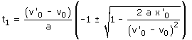

El momento del choque venía dado por:

Al aumentar la aceleración de frenado disminuye el contenido de la raíz (Discriminante) y llegará un momento en que será negativo en cuyo caso el resultado de la raíz será imaginario y no se producirá choque. El caso crítico corresponderá al valor de la aceleración que anula el discriminante: